The Edit Tab¶
In this chapter you will learn the layout of the Edit tab. The Edit tab is where most of the action occurs during recording, editing, and producing your song. This chapter is important, as you will learn the terminology for the Waveform interface and objects used throughout the rest of this book.
📝 Note: The keyboard shortcuts used in the chapter are based on the default key mappings under Settings > Keyboard Shortcuts > Reset to Defaults > Restore default Waveform key mappings. We've already mentioned this several times and this might not be the last! If you want to follow along with the keyboard shortcuts used in this book, make sure to load the default key-mappings.
The Parts of a Waveform Edit¶
The Edit tab is made up of four main parts: The Browser, the Arrangement, the Mixer, and the transport bar. The Browser also hosts the Actions panel.

Parts of the Edit Tab: A, Browser. B, Arrangement. C, transport bar
The Browser¶
The Waveform Browser resides along the left side of the Edit. You can open or close it by clicking its icon or by pressing B. The Browser includes a collection of tabs, giving you quick access to actions, media, plugins, tracks, and markers.
💡 Tip: Starting with T7 and higher , you can move the Browser to the top or right side of the Edit, by dragging its icon to the appropriate edge of the screen.
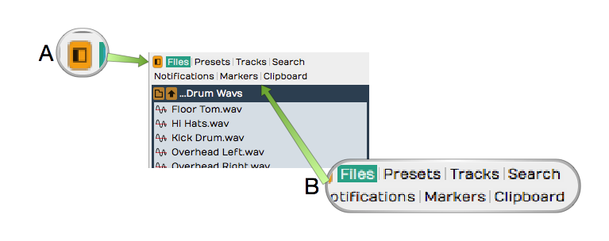
Browser Open/Close Icon, A. Browser Tabs, B.
Here is a short description of each Browser tab:
Actions - The Actions tab shows context-sensitive actions and properties for whatever you currently have selected. See The Actions Panel for full details.
Files - The Files tab is a filesystem browser for navigating directly to audio files on your system, the project folder, or your drives. You can bookmark folders for quick access to your loop libraries, and audition files before dragging them in. See The Files Panel in The Browser.
Search - The unified Search tab lets you search loops, presets, plugins, racks, clips, and tracks in one interface, filtered by category and by tags. This is the main content browser -- see The Browser.
Groups - (Waveform Pro) The Groups tab lists your Edit Mix Groups and lets you create and manage them. See Edit Mix Groups.
Tracks - Use the Tracks tab to filter tracks in the arrangement by tag. First, you need to tag them by selecting one or more tracks and setting tags in properties.
Markers - Use the Markers tab to add bars & beats or timecode markers to the Marker track. Navigate to any marker by simply clicking on the marker name. You can also quickly delete the selected marker, change its name or marker type in properties.
Assistant - (Waveform 14) The Assistant tab hosts the AI Assistant -- a chat panel where you can make natural-language requests. It appears once you enable it on the Settings tab under AI.
Plugin - (Waveform 14) The Plugin tab hosts a single plugin running live on the Edit's main output -- handy for a tuner, analyser, or other tool you want always on hand. Enable it on the Settings tab under Plugins. See The Plugin Side Panel.
For much more about the Browser check out The Browser.
💡 Tip: Resize the Browser by dragging the right edge left or right. This is particularly helpful when working with the Search tab, which has numerous search columns that might be hidden.
The Arrangement¶
The Arrangement is made up of the Timeline, Track Headers & Inputs, Tracks, and the Mixer.

Parts of the Arrangement: A, The Timeline. B, Track Headers & Inputs. C, Tracks. D, The Mixer Timeline. B, Track Headers & Inputs. C, Tracks. D, The
Timeline¶
The Timeline acts as a ruler, measuring the time of the edit. While it is commonly set to show the bars and beats of your song, it can also show seconds and milliseconds or seconds and frames with a simple right-click selection.
The Timeline is related to several other onscreen features:
In-marker & Out-marker - The range between between the In-marker and the Out-marker defines what is called the "marked region" in Waveform. In other DAWs this is called often called the "loop" or "cycle." The marked region defines looped playback, loop recording, and many of Waveform's editing options. The keyboard shortcuts are I to position the In-marker, and O to position the Out-marker.
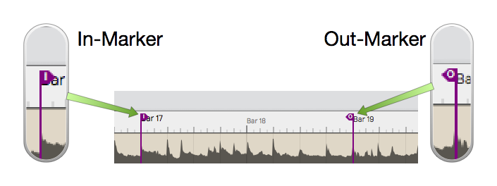
In-marker & Out-marker
Tempo Track - The Tempo track appears below the timeline, when open. Here you define the the tempo and tempo changes. Open and close the Tempo track using F9.
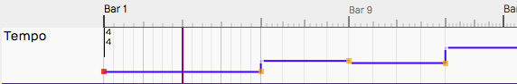
Tempo Track
Marker Track - There are actually two marker tracks that can be opened below the Timeline. One is for bars & beats markers, such as song sections. The other is for absolute time in terms of hours:minutes:seconds and milliseconds. Cycle through the options with F10.
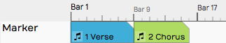
Marker Track
The Clip Object - Above the right side of the Timeline you find the Clip object. Some Waveform users call the Clip object a "clip dragger" or "clip maker." All of the terms are descriptive of how it works. Drag it to a track to create an empty clip of any of the four types - MIDI clip, Audio clip, Edit clip, or Step clip.
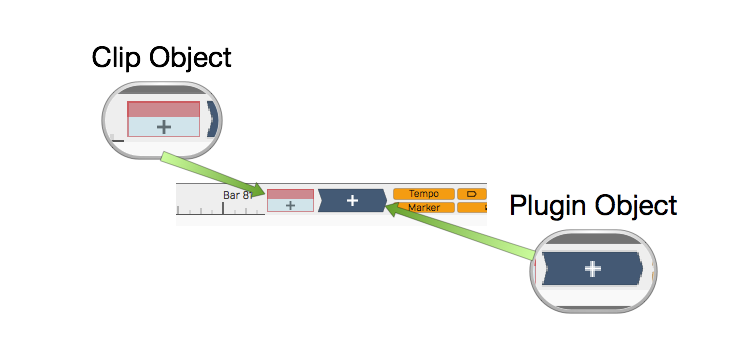
Clip Object and Plugin Object
The Plugin Object - Drag the plugin object to the mixer section of any track to insert an audio effect plugin or virtual instrument. When you drop the Plugin object, you get a menu of all available plugins and instruments. You can control the organization of the menu from the Settings tab Plugins page. Refer to Using Plugins for much more about inserting and using plugins.
Show/Hide Buttons - Several areas of the Edit tab can be opened for use or closed to declutter the screen. Here are the buttons to control those filled by the corresponding keyboard shortcuts.
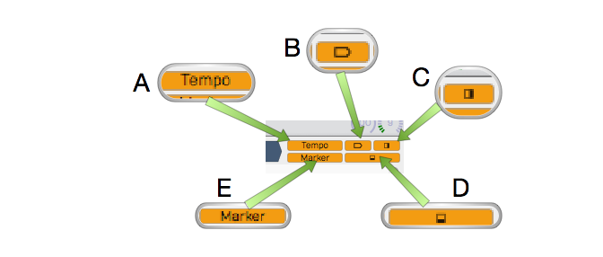
Show Hide Buttons. A, Show/Hide the Tempo track. B, Show/Hide the Inputs. C, Show/Hide the Mixer, D, Show/Hide the Actions panel, E, Show/Hide the Marker Track track. B, Show/Hide the Inputs. C, Show/Hide the Mixer, D, Show/Hide the
- Show/Hide Tempo Track (F9)
- Show/Hide Marker Track (F10)
- Show/Hide Inputs Section (Shift + F12)
- Show/Hide Mixer Section (M)
- Show/Hide Actions panel (F11)
The Track Section¶
Tracks appears as parallel lanes that contain and organize clips of audio and MIDI. Signal flow follows from left to right from Inputs, to Clips for recording, to the Mixer and any plugins it uses, then on to the master output. There is really only one kind of track in Waveform. Tracks can hold any kind of clip: Audio clips, MIDI clips, Step clips, or Edit clips. To create a new Track simply press T.
Track Headers - The leftmost column of the Arrangement forms a list of track headers. Select a track by clicking directly on the track name within the header. Additional track properties including the Name became available in properties. To rename a Track, simple edit the name property. Tracks can be reordered by grabbing any track from the header and dragging it to a new location.
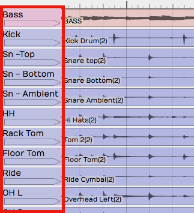
Track Headers
Inputs - Inputs appear as right facing rectangular arrows. Click on an input for a menu of options that includes a selection of available inputs. Use the menu to set up a track for recording. Additional input options are available in properties. You can even drag an input to another track to continue recording.
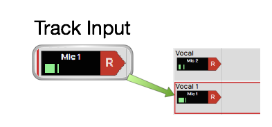
Inputs
💡 Tip: Resize tracks using the zoom tools in the lower right corner of the arrangement.
Clips¶
You can drag in audio files and loops to build your Edit, or record them directly. The same goes for MIDI clips. Step clips are a unique in-line step sequencer. Step clips are variation on MIDI Clips. While Edit clips allow you embed an entirely different Edit into your song as single clip. Selection an of the kinds of clips to access more properties and actions in properties.
Audio Clips - Audio clips are created during recording or can be dragged in from the Browser or desktop. Audio clips are one of the key elements of a Waveform arrangement. Waveform gives you a rich set of tools to work with Audio clips to split them, combine them, reverse them, or change the pitch, timing, or speed. You can also edit Audio clips with Melodyne to adjust the intonation of recorded notes. T7 gives you Clip Layer Effects for even more options to manipulate audio clips. See Clip Layer Effects to learn about this new type of audio processing.
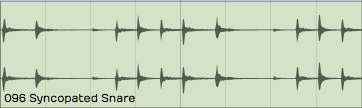
Audio Clip
MIDI Clips - MIDI clips are the Waveform container for MIDI performance data. The clips have many of the same editing features as Audio clips. Expand MIDI clips vertically to see the full in-line piano roll MIDI editor. The MIDI editor comes with a full set of tools for editing, entering, and modifying MIDI notes.
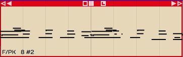
MIDI Clip
Step Clips - Step clips are a unique type of inline step sequencer that gives you amazing flexibility to enter MIDI notes on a grid. Step clips are ideal for programming drum beats and rhythms, they can also be used for baselines, synth leads or just about anything else. Some Waveform users program complete compositions entirely with Step clips.
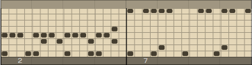
Step Clip
Edit Clips - Edit clips are another unique Waveform concept. You can embed and entire Edit into a clip. You can also use Edit clips to separate out all your drum programming to another Edit as an aid when doing complex drum programming. Use Edit Clips to compose songs in blocks - develop the verse, chorus, and bridge in separate Edits and bring them together in another Edit. Teachers use it when recording several students singing over the same underlying track. It is a very unique feature and uses for it are still being discovered!
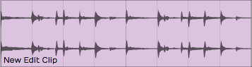
Edit Clip
Edit clips behave in the arrangement just like Audio Clips. How can you tell the difference? They have an additional section in the Actions panel to manage the link to the underlying Edit.
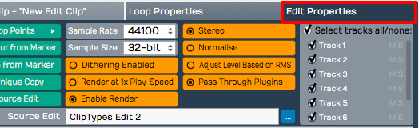
Edit clip properties
The Mixer¶

The Mixer, with a channel strip for every track.
Waveform's default Mixer view is one of it's unique, defining features. For each track, signal flows from left to right - Input to Track, Track to Mixer, Mixer to Master. The Mixer is where you arrange plugins to create whatever channel strip you need for the track. If you have MIDI clips on the track then insert virtual instrument as a sound source. If you need to EQ a vocal, drop in an EQ.
The Volume & Pan and Level Meter plugins are installed by default, however you can remove, reorder, or even add more instances of them. You will find the following things on every track by default:
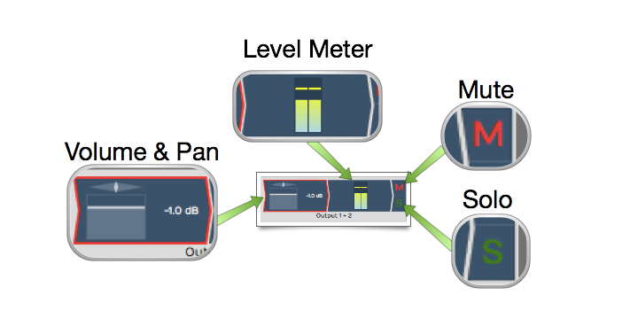
Mixer Default Setup: Volume & Pan Plugin, Level Meter Plugin, Solo Button, Mute Button
Volume & Pan Plugin - This acts as like the channel fader and pan controls on a conventional mixer. When you click either element, a larger version pops up allowing you to easily adjust level or panning. When selected, the full set of properties appear in properties.
Level Meter Plugin - The level meter shows the level of audio on the track. You can add additional instances or put the meter anywhere in the track using drag and drop. You can change the meter response between Peak, RMS, and Sum & difference from the right-click menu or from properties.
Mute - The Mute button mutes and un-mutes the track. You can also mute by selecting a plugin and then right-click. The keyboard shortcut for mute is Shift + M.
Solo - The Solo button silences all other tracks so you can hear one track at a time. Settings > General > Solo Behavior allows you to customize exactly how Solo works. Choose from Cumulative or Exclusive modes. From the right-click menu you can choose Solo Isolate which allows the track to continue to play if another track is soloed. This is particularly useful if a track is configured as an effects bus.
💡 Tip: Right-click on either Mute or Solo to access a menu. From here you can reset all the solo and mute states for all tracks.
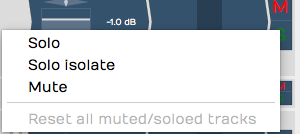
Mute/Solo Right-Click Menu
Note that starting with Waveform version 8, there is also an alternative "traditional" mixer view available, that displays the mixer channels vertically as seen on a real-world, hardware mixer. To use this mixer view instead, click on the show/hide mixer panel button in the upper right corner of the Waveform interface.Further details of the mixer panel will be included in a future review of the user's manual.
Menus¶
A full set of menus related to the Edit are available in the menu bar at the top of the window. Of particular importance are the Export, Click Track, Snapping, and Options menus. In this manual, we make numerous references to these menus using a path syntax separated by "greater-than" symbols. For example, "to set a one bar count-in choose Click Track > Pre-record count-in length > Use a 1 bar count-in."
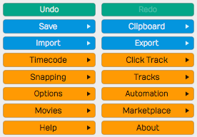
The Edit menus
The Actions Panel¶
What is shown in the Actions panel depends on what object you have selected. Each track, input, clip, plugin, rack, and automation point has its own set of properties and actions. Click to select any object and the Actions panel automatically switches to show the values and actions relevant to whatever you have selected. This is a key concept when using Waveform, and is central to its design. The Actions panel is a flat list at the side of the window, and can also be opened from the Browser.
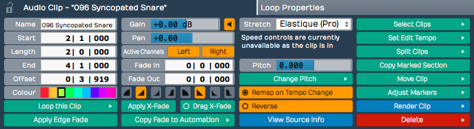
The Actions Panel
The Transport Bar¶
The transport bar runs along the bottom of the window and contains cursor position information, the Transport, the master volume control, and a set of global control buttons. Final master plugins live on the master track or in the mixer's master channel.
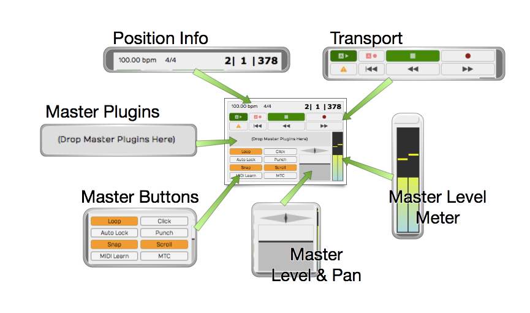
The Transport Bar
Cursor Position Info - At one end of the transport bar, you will notice three key pieces of information about the current cursor position: The tempo, the time signature, and the location counter.
- Click the tempo display to see tempo properties.
- Click the time signature for time signature properties.
- Click and edit any of part of the location counter to move the cursor to that location.
You can also drag any of the components of the location up and down to move the cursor. The location counter format will change to match what you have set for the Timeline.
The Transport - The Transport is made up of a set of eight buttons that include all the usual suspects: Play/Stop, Record, RTZ, Rewind, and Fast Forward. In addition, there are buttons for Automation Read, Automation Write, and Panic. The Panic button restarts Waveform's audio engine. All of these can be assigned to keyboard shortcuts for fast access.
Master Plugins - Final processing like compression and limiting goes on the master track or the mixer's master channel. Drag plugins from the Browser or the Plugin object onto the master, or right-click to add them.
Transport Bar Buttons - The transport bar includes eight buttons to access commonly used global on/off functions. More on these buttons in a moment.
Master Level - The Master level provides the final volume adjustment for the entire mix. The corresponding pan control provides control of the balance between the left and right signals. For most applications the Pan control will remain centered.
Master Meter - The Master meter shows the final output level. Right-click the meter to set the meter mode or reset any overload indicators.
Transport Bar Buttons¶
The transport bar buttons include some of the most used functions in Waveform. This is a description of what these buttons are for along with the shortcut used to toggle the button.
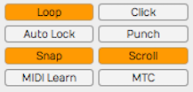
The Transport Bar Buttons
Loop - Loop (L) turns looping between the In-marker and Out-marker on and off. This is for both playback and loop recording.
Click - Click (C) turns the metronome click on and off.
Auto Lock - Auto Lock is short for "Automation Lock." As the name implies, this button locks automation to clips. When on, as you move clips around the automation curves follows along.
Punch - With Punch (P) tuned on, Waveform will only record when the cursor is between the In-marker and the Out-marker.
Snap - Snap (Q) button turns snap-to-grid on and off.
Scroll - With Scroll (S) turned on, Waveform pans the screen to keep the cursor on screen during playback and recording.
MIDI Learn - Click MIDI Learn to enter MIDI Learn mode. In this mode you can easily assign external knobs and faders to on-screen controls.
MTC - With MTC enabled, Waveform will chase sync to incoming MIDI Time Code. Unless you are still syncing to tape or hardware sequencers, leave MTC off.
Moving On¶
That was a broad overview of sections, controls, and buttons on the Edit tab. Next, we start to break all this down so you can have fun making music with Waveform.